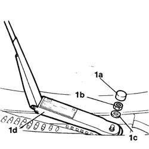

5050B32 windscreen wiper arm/s - r+r
- Path
- Procedures > 50 AUXILIARY UNITS > 5050 SCREEN WASHERS AND HEADLAMP WASH/WIPE > 5050B windscreen wash/wipe > 5050B32 windscreen wiper arm/s - r+r
- Kind
- repair procedure (removal / refitting; the operation number is the code)
- Applies to
- all engines; all production periods
- Interactive page
- https://sloeber94.github.io/elrnDB-fDbl/en/#/2584861
Applies to: all engines; all production periods
 Removing
Removing
 Refitting
RefittingOp. 5050B28 WINDSCREEN WIPER BLADE/S - R+R
Mark the position of the wiper arm.
1. Remove the nut cover (1a), undo the fixing nut (1b), recover the washer (1c) and remove the wiper arm (1d).

Applies to: all engines; all production periods
Refitting
RemovingCheck that the window wiper arm is not damaged.
Fit the wiper arm in the positioned marked during the removal.
Fit the washer and tighten the fixing nut to torque.
 | Fastening | Component | Ø | Value (daNm) |
|---|---|---|---|---|
- | Nut | WINDSCREEN WIPER ARM/S | M8 | 2 |
Fit the nut cover.
Op. 5050B28 WINDSCREEN WIPER BLADE/S - R+R
Check that the windscreen wiper is working properly.